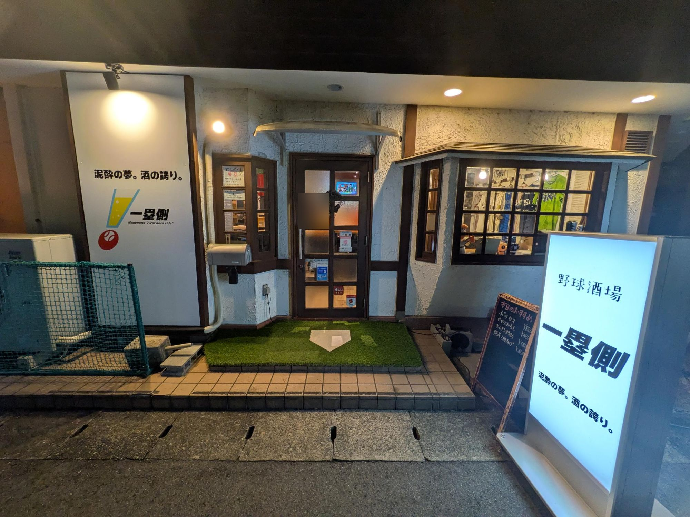
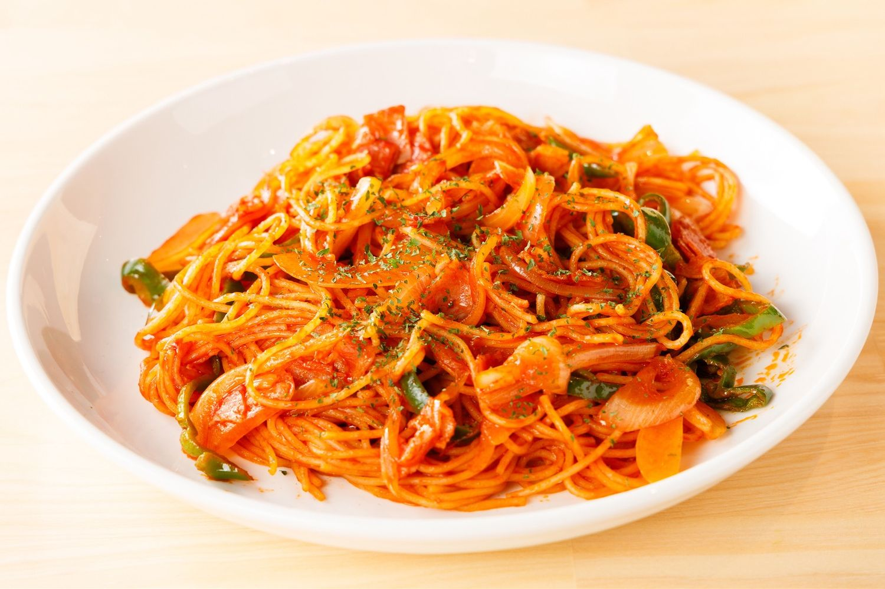
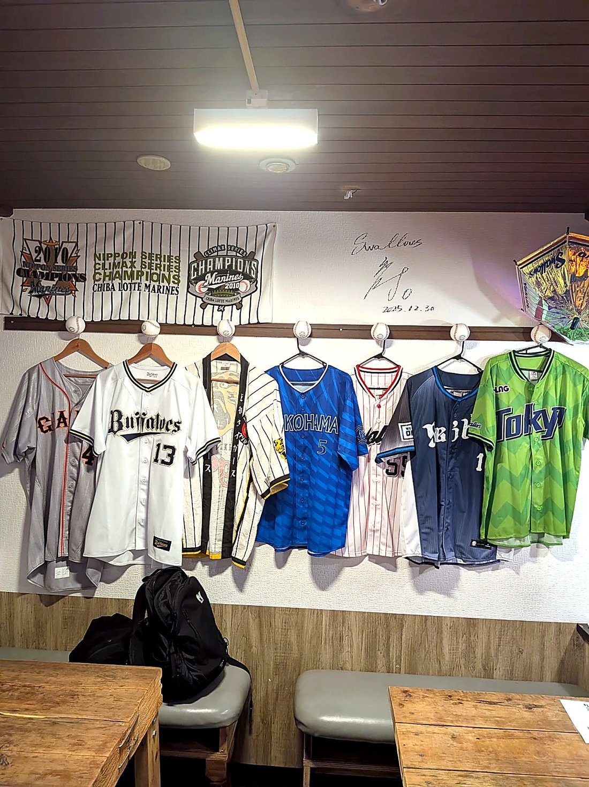
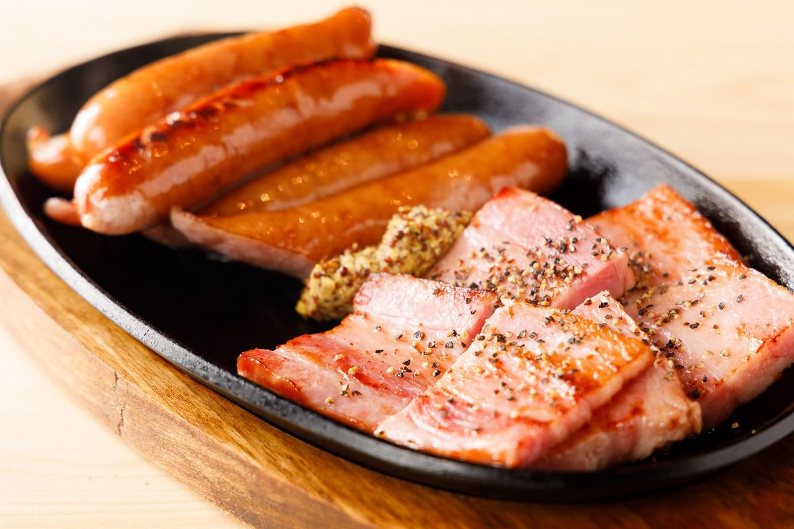
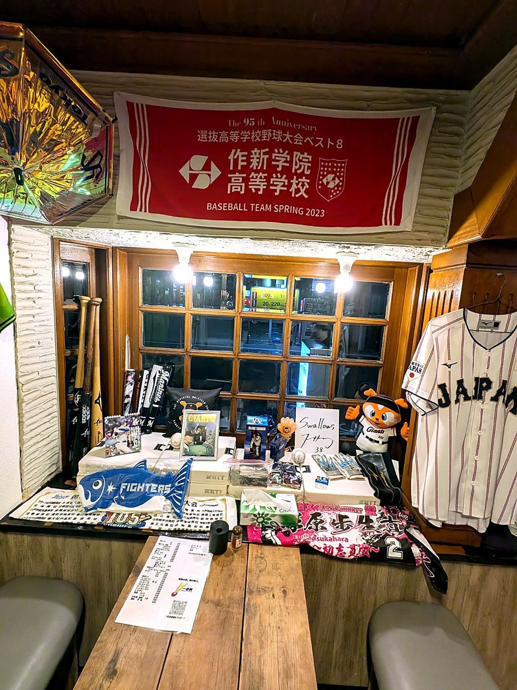

泥酔の夢。酒の誇り。









店主より
［仮］ここにオーナーの想いが入ります。お店を始めた理由、野球への思い、ナポリタンのこと、来てほしい人のこと。
一塁側 店主
NAPOLITAN
ナポリタンに、
ナポリタンに、命をかけてます。
［仮］一塁側の名物ナポリタンは、こんな4つのこだわりでできています。（内容はオーナーに確認して差し替えます）
1麺
［仮］まずは麺から。
［仮］麺の太さ・ゆで方・もちっとした食感へのこだわりを書きます。
2ソース
［仮］ソースは炒めて仕上げる。
［仮］ケチャップの炒め方、隠し味、味の決め手を書きます。
3具材
［仮］具はあの定番で。
［仮］ウインナー、玉ねぎ、ピーマンなど、具材の選び方を書きます。
4仕上げ
［仮］熱々のうちに、どうぞ。
［仮］盛りつけ、皿、食べ方のおすすめ、価格などを書きます。